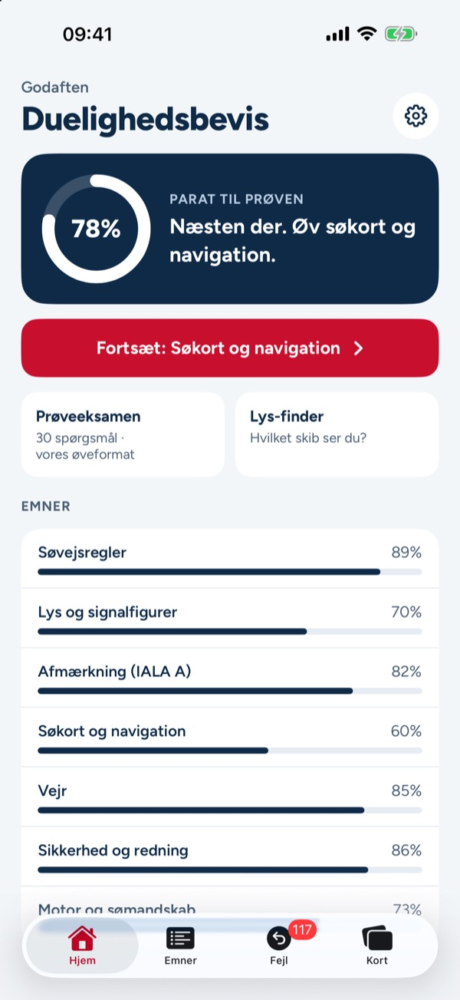
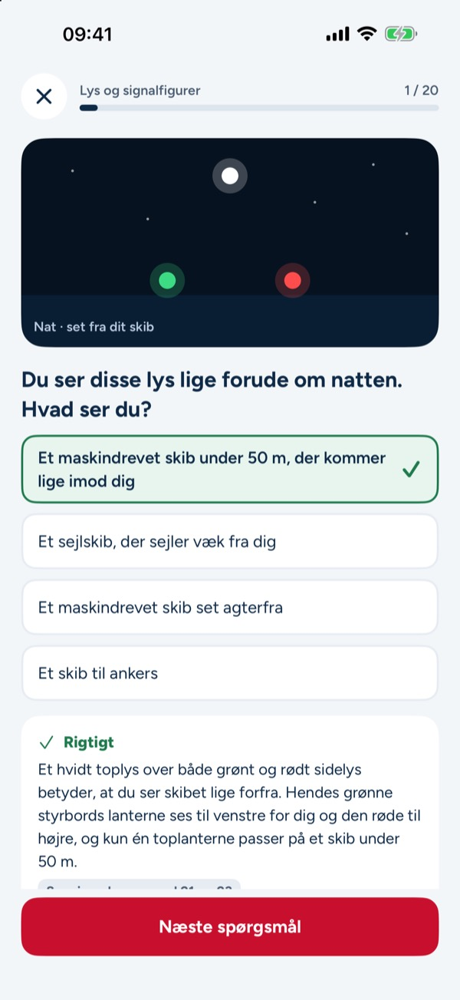
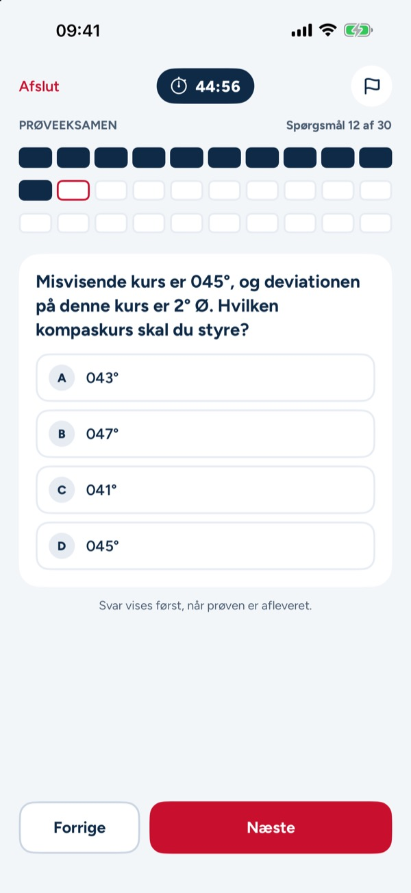
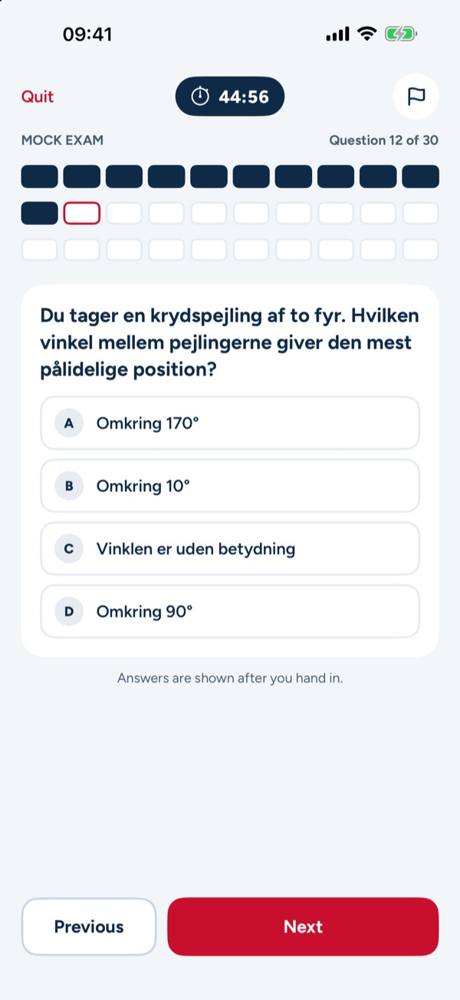
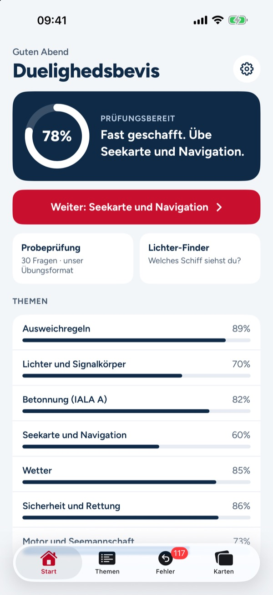
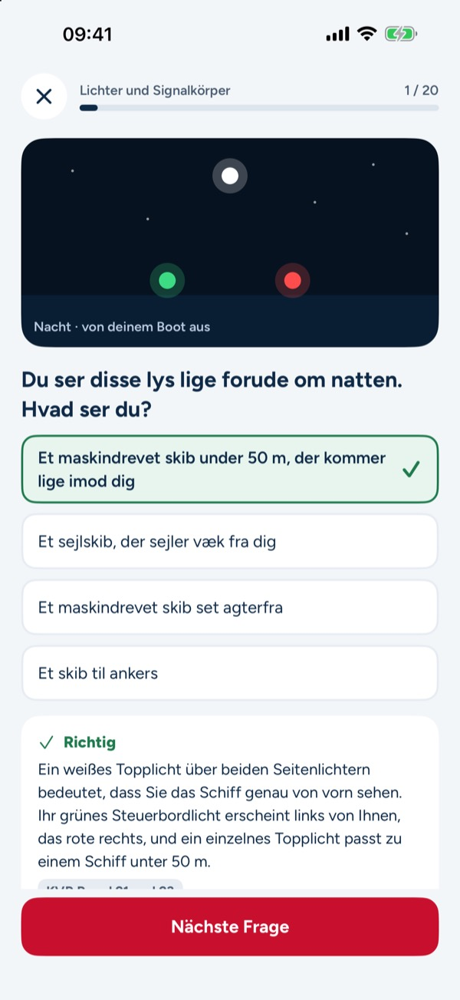
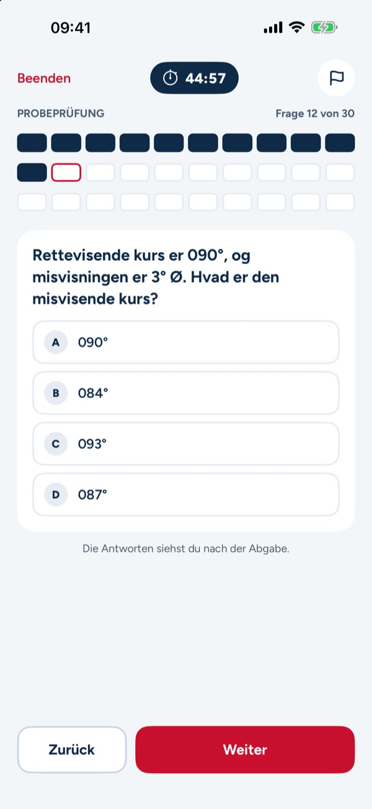

Speedbådskørekort og sejlads



Forbered dig til teoriprøven til duelighedsbevis i sejlads og til speedbådsbeviset. 385 øvespørgsmål med forklaring, prøveeksamen med tid og kort over afmærkning, lanterner og lydsignaler. Betal én gang, intet abonnement.
Vælg duelighedsbevis eller speedbåd. Første emne kan bruges uden køb. Et engangskøb låser alle emner, prøveeksamen, kort og Lys-finder op. Appen virker uden internet og kræver ingen konto.
Spørgsmålene er på dansk som til prøven. Forklaringer og menuer findes på dansk, engelsk og tysk.
Den teoretiske duelighedsprøve har intet fast antal spørgsmål; censor laver opgaverne og hører dig mundtligt i søvejsreglerne. Appens prøveeksamen er et øveformat.
Appen er uafhængig og ikke tilknyttet Søfartsstyrelsen, Dansk Sejlunion eller andre myndigheder. Alle spørgsmål er skrevet til øvelse.
Terms of Use (EULA): https://www.apple.com/legal/internet-services/itunes/dev/stdeula/
Privacy: https://baytechbv.github.io/privacy/duelighedsbevis-dk/
Danish boating theory test

Prepare for the Danish boating theory test (duelighedsbevis i sejlads) and the speedboat licence (speedbådsbevis). 385 practice questions with explanations, timed mock exams and cards for buoyage, navigation lights and sound signals. Pay once, no subscription.
Choose duelighedsbevis or speedboat. The first topic can be used without a purchase. A one-time purchase unlocks all topics, the mock exams, the cards and the light finder. The app works offline and needs no account.
Questions are in Danish, as in the test. Explanations and menus are available in Danish, English and German.
The duelighedsbevis theory test has no fixed number of questions; the examiner sets the tasks and tests the rules of the road orally. The app's mock exam is a practice format.
This app is independent and not affiliated with the Danish Maritime Authority, the Danish Sailing Association or any authority. All questions are written for practice.
Terms of Use (EULA): https://www.apple.com/legal/internet-services/itunes/dev/stdeula/
Privacy: https://baytechbv.github.io/privacy/duelighedsbevis-dk/
Dänischer Bootsführerschein



Bereite dich auf die dänische Bootstheorieprüfung (Duelighedsbevis i sejlads) und den Speedboot-Führerschein (Speedbådsbevis) vor. 385 Übungsfragen mit Erklärungen, Probeprüfungen mit Zeit und Karten zu Betonnung, Lichterführung und Schallsignalen. Einmal zahlen, kein Abo.
Wähle Duelighedsbevis oder Speedboot. Das erste Thema kannst du ohne Kauf nutzen. Ein Einmalkauf schaltet alle Themen, die Probeprüfungen, die Karten und den Lichter-Finder frei. Die App funktioniert offline und braucht kein Konto.
Die Fragen sind wie in der Prüfung auf Dänisch. Erklärungen und Menüs gibt es auf Dänisch, Englisch und Deutsch.
Die Theorieprüfung zum Duelighedsbevis hat keine feste Fragenzahl; der Prüfer stellt die Aufgaben und prüft die Ausweichregeln mündlich. Die Probeprüfung der App ist ein Übungsformat.
Diese App ist unabhängig und gehört nicht zur dänischen Seefahrtsbehörde, zum dänischen Seglerverband oder zu einer Behörde. Alle Fragen sind zum Üben geschrieben.
Terms of Use (EULA): https://www.apple.com/legal/internet-services/itunes/dev/stdeula/
Privacy: https://baytechbv.github.io/privacy/duelighedsbevis-dk/